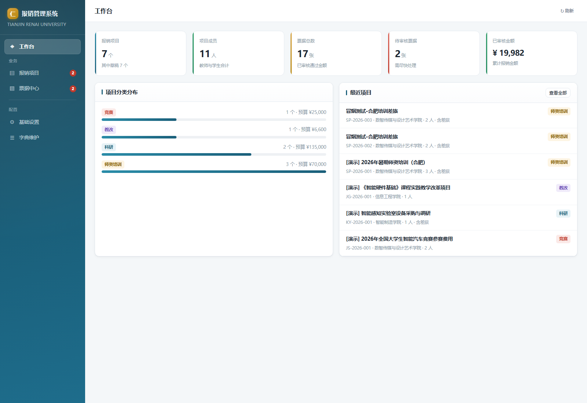
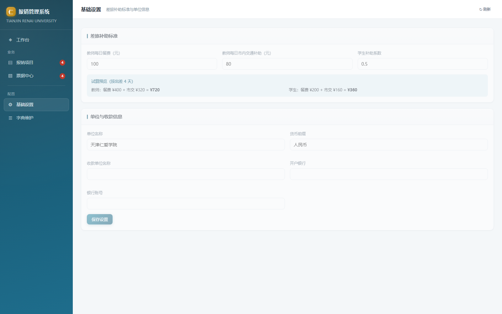
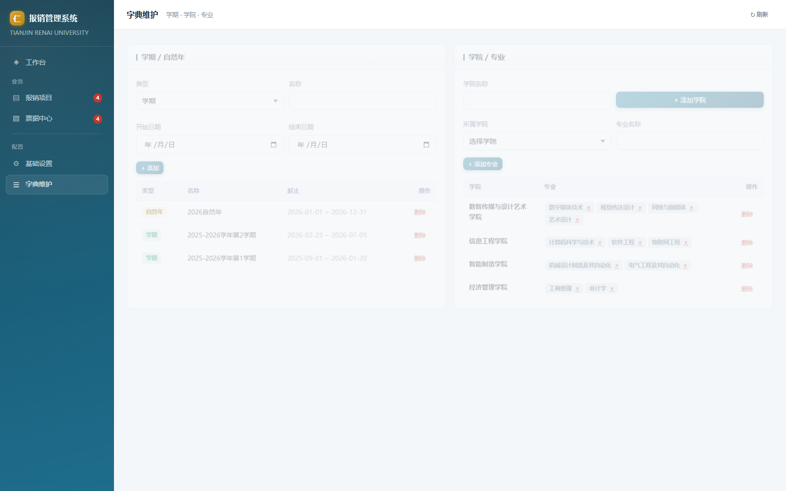
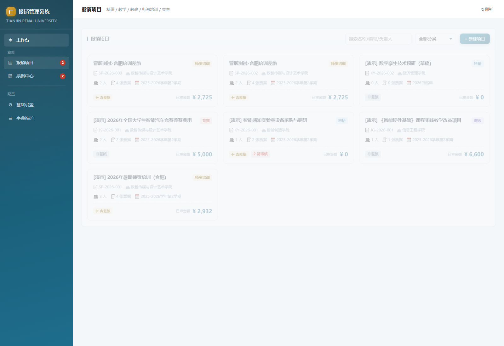
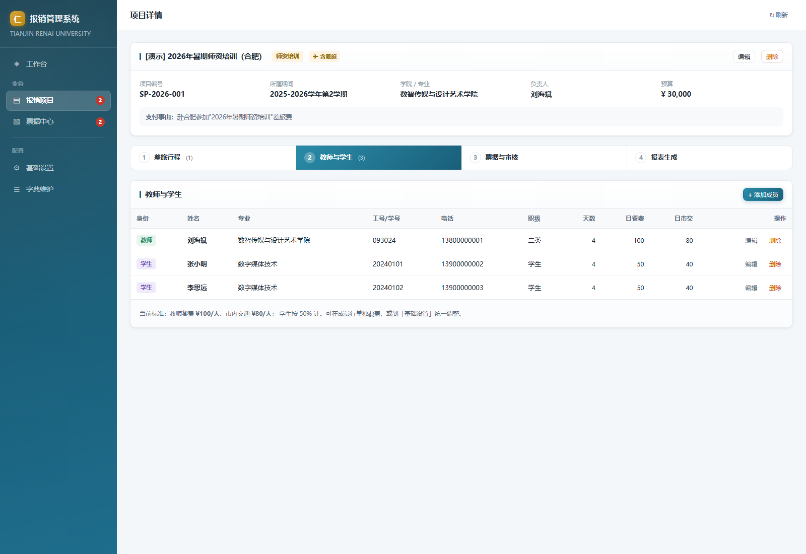
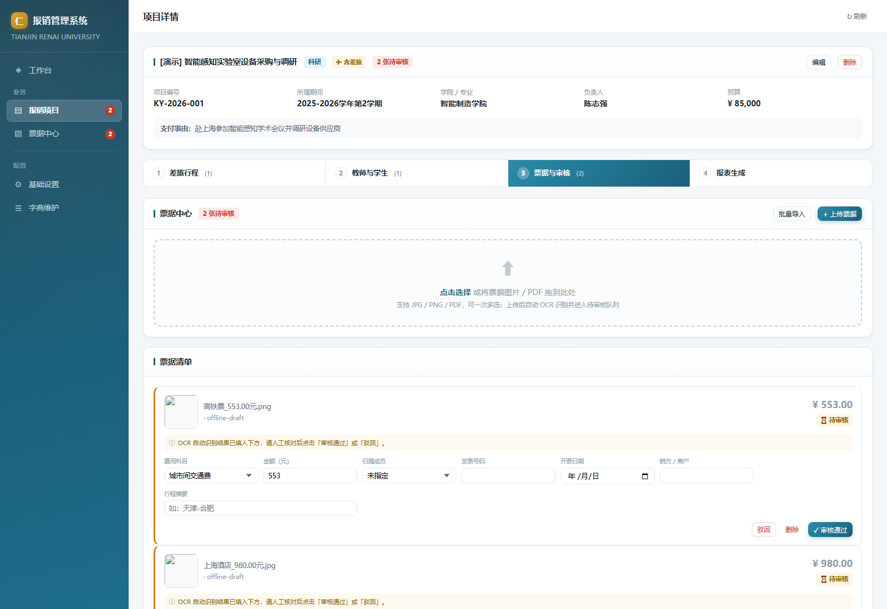
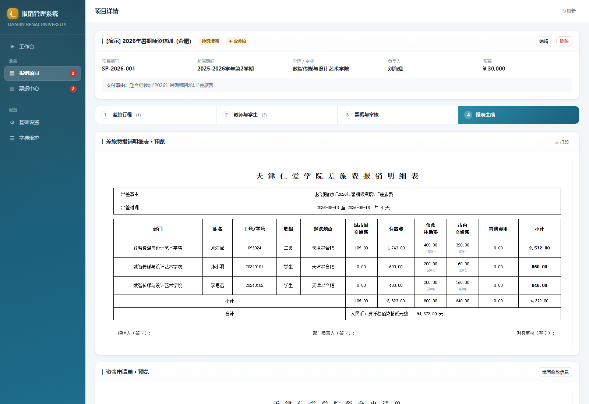
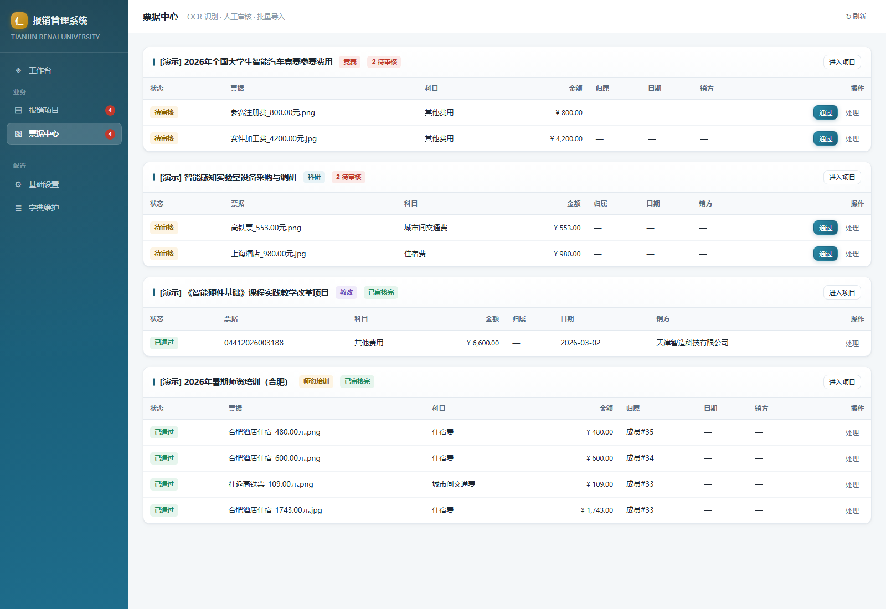

1. 启动与访问
| 方式 | 操作 | 适用 |
|---|---|---|
| 双击启动（推荐） | 启动报销系统.bat | 非技术同事；脚本检查 Node ≥ 22 后自动开浏览器 |
| 命令行 | npm start | 需要看日志 |
| 重启 | npm restart | 端口被占 / 数据库锁（先杀掉占用 5180 的旧进程再拉起） |
| 停止 | npm stop | 下班关机前 |
- 访问地址：http://127.0.0.1:5180
- 必须使用 Node.js ≥ 22（数据库用的是 Node 22 内置的
node:sqlite）。
⚠️ 不要直接双击
server/public/index.html：file:// 协议连不上后台数据库，页面会是空白（系统会弹窗提示正确入口）。2. 界面总览
| 模块 | 作用 |
|---|---|
| ◈ 工作台 | 汇总卡片：项目数、待审票据、报销总额等 |
| ▤ 报销项目 | 项目列表 / 新建；点「进入项目」走四步向导 |
| ▧ 票据中心 | 全局待审队列，可快速「通过」或「处理」 |
| ⚙ 基础设置 | 补助标准、单位名称、默认收款信息 |
| ☰ 字典维护 | 期间（学期 / 自然年）、学院、专业 |
右上角 ↻ 刷新 可刷新当前页。

3. 首次使用：按顺序做这 6 步
| 步骤 | 在哪做 | 做什么 |
|---|---|---|
| ① | 基础设置 | 确认伙食 / 市内交通补助标准、单位名称、默认收款账户 |
| ② | 字典维护 | 确认学院、专业、期间齐全（已内置官网 12 学院 / 39 专业） |
| ③ | 报销项目 | 新建项目（选类别、学院、是否有差旅） |
| ④ | 项目 · 步骤 1 / 2 | 添加教师与学生 + 录差旅行程（行程可按人绑定） |
| ⑤ | 项目 · 步骤 3 | 上传票据（OCR）→ 逐张审核通过 |
| ⑥ | 项目 · 步骤 4 | 预览报表 → 导出 docx / xlsx |
顺序不能乱：票据必须「审核通过」才会计入金额；没有成员和天数，补助算不出来。
4. 基础设置

| 字段 | 默认值 | 说明 |
|---|---|---|
| 教师日餐费 | 100 元/天 | 伙食补助费日标准 |
| 教师日市内交通 | 80 元/天 | 市内交通补助日标准 |
| 学生系数 | 0.5 | 学生按教师标准 × 系数（即餐 50、市交 40） |
| 单位名称 | 天津仁爱学院 | 写入资金申请单抬头 |
| 币种前缀 | 人民币 | 合计行大写前缀 |
| 收款单位名称 / 开户银行 / 银行账号 | 空 | 导出资金申请单时的默认值，可在导出时临时改 |
保存后立即对所有项目生效，页面下方有「按出差 4 天」的试算预览可核对。
5. 字典维护

- 期间：支持「学期」「自然年」两种口径，新建项目时选归属期间。
- 学院 / 专业：已按学校官网（
tjrac.edu.cn/jgsz/ejxy.htm）内置 12 个二级学院 + 39 个本科专业；专业下拉会按所选学院自动过滤。 - 同步官网最新数据：
node --experimental-sqlite server/sync_org.js --dry-run先看差异，确认后去掉--dry-run执行。
6. 报销项目

| 字段 | 必填 | 说明 |
|---|---|---|
| 项目名称 | ✅ | 如「2026年暑期师资培训（合肥）」 |
| 项目编号 | — | 留空自动生成（前缀 + 序号，自动避让已有编号） |
| 项目分类 | ✅ | 科研 SP / 教改 JG / 师资培训 PX / 竞赛 JS / 其他 QT |
| 所属期间 | — | 学期或自然年 |
| 学院 / 专业 | — | 专业列表随学院联动 |
| 项目负责人 | — | |
| 预算金额 | — | 仅作参考，不参与报销计算 |
| 支付事由 | — | 会写入资金申请单的「支付事由」 |
| 是否含差旅 | — | 决定导出物：有差旅多一份《差旅费报销明细表》 |
列表支持按名称搜索 + 按分类筛选；删除项目会级联删除其行程、成员、票据。
7. 项目四步向导

步骤 1 · 教师与学生
| 字段 | 说明 |
|---|---|
| 身份 | 教师 / 学生（学生补助按系数减半） |
| 姓名、工号 / 学号、专业、电话 | 专业可从下拉选（按项目学院过滤） |
| 职级 | 如「二类」，学生可留空 |
| 出差天数 | 默认继承所绑定行程的天数，可单独改 |
| 日餐费 / 日市内交通 | 留空用全局标准；填了则按个人标准算 |
💡 先加人再录行程：行程要按人绑定，成员先录好，第 2 步才勾得到人。
步骤 2 · 差旅行程
支持多段行程：点「+ 增加一行行程」可添加多行，每行一段行程。
| 字段 | 说明 |
|---|---|
| 出差事由 | 写入《差旅费报销明细表》表头 |
| 出发 / 返回日期 | 天数 = 含首尾的天数 |
| 出发地 / 目的地 | 生成明细表时，每人按自己绑定的行程显示起讫地点 |
| 绑定人员 | 勾选只走这段行程的人；不勾选 = 全部人员默认套用此段行程 |
💡 自动填充：如果该项目的票据已经 OCR 出日期和行程，点「+ 增加一行行程」时会自动预填出发 / 返回日期与往返城市；编辑行程时可用「从票据填充空项」（只填空值，不覆盖已填）。
步骤 3 · 票据与审核

- 上传票据：支持
jpg / jpeg / png / gif / bmp / webp / tif / tiff / pdf，可一次选多张；PDF（含铁路电子客票）走内置文本解析。可填「补充提示」提高归类准确度，如住宿费 / 合肥。 - 人工审核：识别结果一律是待审核，必须逐张核对字段（费用科目、金额、归属成员、发票号、日期、销方、行程），点 ✓ 审核通过 才计入报销。错票可驳回（不计入）或删除；误通过可「撤销通过」。
- 批量导入：点「批量导入」→ 下载 CSV 模板 → 粘数据，支持 CSV / JSON 两种格式。
CSV 模板表头：
票据类型,姓名,工号/学号,发票号,日期,金额,销方名称,纳税人识别号,行程,费用,备注
住宿费,刘海斌,093024,12345678,2026-03-02,1743,北京如家酒店,91110000123456789A,,住宿3晚,
城市间交通费,刘海斌,093024,22345678,2026-03-02,109,中国铁路,91110000123456789A,天津-北京,往返高铁票,步骤 4 · 报表生成

- 上半部分是与导出文件同版式的预览，可点 🖨 打印（或直接浏览器打印为 PDF 留存）。
| 按钮 | 产物 | 条件 |
|---|---|---|
| ⬇ 导出差旅费报销明细表 | 项目编号_差旅费报销明细表.docx | 项目含差旅且有行程 |
| ⬇ 导出资金申请单 | 项目编号_资金申请单.xlsx | 任何项目 |
导出资金申请单时会先弹窗填「报销金额 / 收款单位名称 / 开户银行 / 银行账号 / 支付方式」，可临时覆盖默认值。导出文件同时落在服务器的 exports/ 目录，历史记录可在报表步骤追溯。
8. 金额是怎么算出来的
| 费用项 | 计算规则 |
|---|---|
| 城市间交通费 | 该类票据金额之和；明细表显示表达式，如 54.5*2（单程票价 × 张数），多种票价用 + 连接 |
| 住宿费 | 住宿票据金额之和 |
| 伙食补助费 | 日标准 × 出差天数（学生 × 系数）；显示 100*4 |
| 市内交通费 | 有市内交通票据就按票据实报，否则按 日标准 × 天数 |
| 其他费用 | 其他类票据逐条列出（超 3 条合并为「其他 N 项」） |
| 小计 | 每人五项相加 |
| 合计 | 全员小计之和；明细表末行给出人民币大写 + ¥ 小写 |
只有 审核通过（approved） 的票据参与计算；待审核、驳回的都不计入。
9. 导出的两份表
| 文件 | 版式 |
|---|---|
| 差旅费报销明细表 .docx | 横向 A4，11 列（部门 / 姓名 / 工号 / 职级 / 起讫地点 / 城市间交通费 / 住宿费 / 伙食补助费 / 市内交通费 / 其他费用·项目·金额），列头纵向合并，含小计行与整行合并的合计行，底部签字区 |
| 资金申请单 .xlsx | 复刻学校官方模板：标题行、日期行（留空手写）、合同编号 + 收款单位、开户行 + 账号、金额数字网格（前导零 ⊗ 注销）+ ¥ 小写、两行 6 格签字栏。「合同(项目)编号及名称」仅科研类项目填写，教学 / 教改 / 师资培训 / 竞赛一律留空 |
10. 票据中心（全局）
左侧「票据中心」汇总所有项目的待审票据，徽标数字 = 待审数量。列表里可直接点通过快速放行，或点处理跳到对应项目的票据步骤逐张核对。
按项目合并打印票据
每个项目卡片（以及项目详情 · 票据步骤）右上角都有 🖨 打印全部票据：系统会把该项目所有 PDF 票据按上传顺序合并成一个 PDF（每张票据单独一页），弹窗内先预览，确认后点 🖨 打印 调起打印对话框；也可点新窗口打开用浏览器自带 PDF 打印。非 PDF 票据（图片等）自动跳过。

11. 常见问题
| 现象 | 原因 / 处理 |
|---|---|
| 打开页面一片空白 | 用 file:// 打开了 HTML → 必须访问 http://127.0.0.1:5180 |
npm start 报端口占用 / 数据库锁 | 执行 npm restart（先杀旧进程） |
| 提示需要 Node 版本 | 升级到 Node ≥ 22 |
| 票据识别字段为空或不准 | 识别结果本来就需人工审核：在票据卡片上直接改字段，改完点「审核通过」 |
| 补助金额算不出来 | 检查：成员是否添加、出差天数是否填、行程是否存在 |
| 想给同事访问 | 设置环境变量 AUTH_USER / AUTH_PASS 启用 Basic Auth，或按 deploy/DEPLOY.md 部署到服务器 |
| 想看演示效果 | node --experimental-sqlite server/demo_data.js（生成 5 个覆盖全分类的演示项目） |
| 数据丢了怎么办 | 数据库在 data/reimburse.db，定期用 deploy/backup.sh 备份 |
| 导出报错 | 看 data/server.log；多数是服务未启动或项目缺行程 / 成员 |
12. 运维速查
npm start # 启动
npm restart # 强制重启（杀 5180 占用进程）
npm stop # 停止
node --experimental-sqlite server/smoke.js # API 冒烟（56 项）
node --experimental-sqlite server/ui_smoke.js # 界面冒烟（无头浏览器）
python server/verify_exports.py # 导出文件校验（40 项）
node --experimental-sqlite server/demo_data.js # 灌演示数据
node --experimental-sqlite server/sync_org.js --dry-run # 同步学院/专业（预演）日志文件：data/server.log · 数据库：data/reimburse.db · 票据原件：data/uploads/ · 导出件：exports/